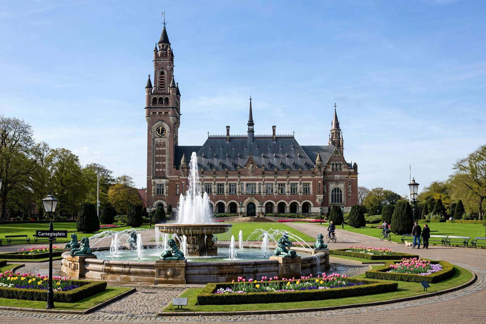

International Court of Justice
From Wikipedia, the free encyclopedia

The Peace Palace in The Hague, Netherlands, seat of the International Court of Justice.
The International Court of Justice (ICJ) is the principal judicial organ of the United Nations. Established in 1945 by the UN Charter and seated at the Peace Palace in The Hague, it settles legal disputes between states submitted to it and gives advisory opinions on legal questions referred by UN organs and specialised agencies. Its 15 judges are elected for nine-year terms by the UN General Assembly and Security Council.
Jurisdiction
Only states may appear in contentious cases, and the Court's jurisdiction depends on state consent — given by special agreement, by treaty clauses, or by optional declarations accepting compulsory jurisdiction (filed by roughly seventy states). Judgments are binding on the parties and without appeal, though enforcement depends ultimately on the Security Council; states have usually, but not always, complied. In advisory proceedings the Court has opined on questions including the legal status of nuclear weapons (1996), the Israeli West Bank barrier (2004), Kosovo's declaration of independence (2010) and the Chagos Archipelago (2019).
Significance
Successor to the League of Nations' Permanent Court of International Justice, the ICJ is the most visible embodiment of a rules-based international legal order — praised for developing international law and criticised for the consent limits on its reach and the absence of jurisdiction over individuals, which is instead the province of the International Criminal Court.
See also
International law · United Nations · International Criminal Court · Rule of law